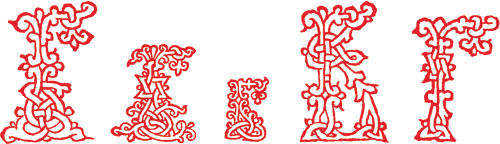

Два абзаца (параграфа)
Как и в любом настоящем искусстве, в хороших текстах нет мелочей, к которым некоторые относят и красную строку, считая, что употребление ее не так уж и важно. Однако надо понимать, что любая запятая несет в себе как эстетическую, так и смысловую нагрузку, а не только является данью правилам грамматики – это касается и форматирования.
3. Одну картинку из интернета, которая находится в свободном доступе, то есть которая будет доступна без регстранции и смс ;)

4. Одну картинку, которая будет браться локально. Все локальные картинки должны храниться в папке img, которая должна лежать рядом с html-документом.
5. Один нумерованный список со значениями.
6. Один маркированный список со значениями.
7. Одну ссылку.
callisto.networkЗапущенный 15 апреля 2018 года, мы посвятили себя защите среды смарт-контрактов. На сегодняшний день мы проверили не менее 340 смарт-контрактов, что делает нас лидером отрасли. Благодаря этому опыту мы создали Callisto Enterprise, дочернюю компанию, специализирующуюся на корпоративных приложениях технологии блокчейн. К этой инициативе присоединились несколько крупных компаний общественного транспорта из Центральной и Восточной Европы. Поэтому мы создали масштабируемую блокчейн-экосистему с механизмом ставок, полным протоколом DeFi и стабильной монетой. Callisto Network — это самодостаточная и самофинансируемая блокчейн-экосистема, не финансируемая за счет предварительно добытых монет или ICO.
8.Один локальный, подключенный css-файл, в котором прописаны пара стилей, применяемых на странице.
green-corp-landing
Сайт Андрея